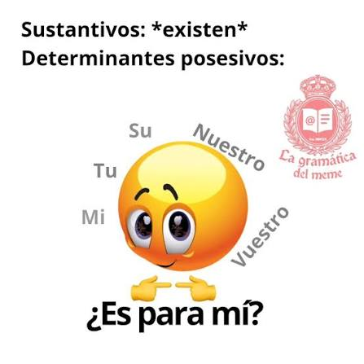

Determinante
• Definición propia: Son palabras que acompañan al sustantivo para aclarar a quién le pertenece, qué tan lejos está, o para darnos una idea de la cantidad.
• Banco de palabras: Mi, este, tres, varios, aquella.
• Oración de aplicación: Este software solucionó todos los problemas de rendimiento que teníamos.
